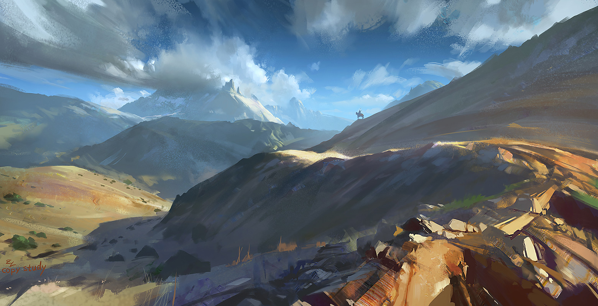

1、考虑到使用场景，作者这一身份，在发布作品这一功能需求上，并不一定有专门坐在电脑前的时间。所一作者会额外开发一套移动端后台。
2、

文章详情


九州，是一个梦想。是天空里的第一滴水，我们希望它能变成海洋

喷火大怪龙

2018-12-24 16:30

九州所在的苍茫世界是一个球面，然而这个球面有些不同寻常，因为没有任何人能证明人们可以向西一直走回东方，大地几乎是无限伸展的。你不回头，就永远回不到起点，前方是永远的长路。九州的大地对其上的生物来说几乎是无限广大的。
当九州上的人们抬头仰望天空，在白昼，他们会看见太阳，但不仅仅是太阳，其他除了谷玄之外的双月及九主星就会按当时力量的不同时隐时


浏览文章
放入回收站
返回